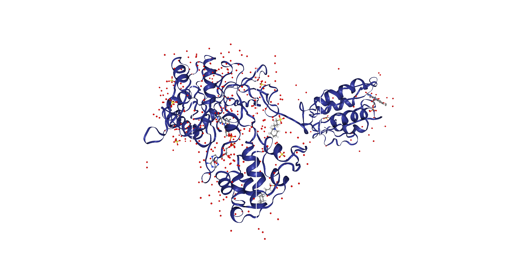
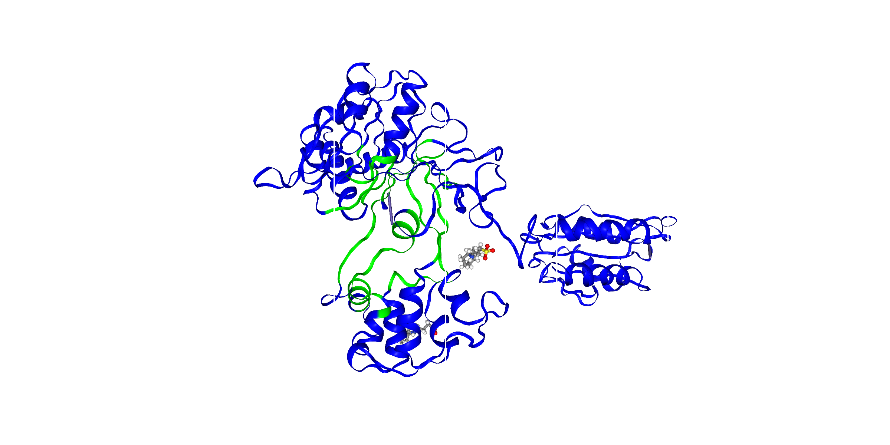
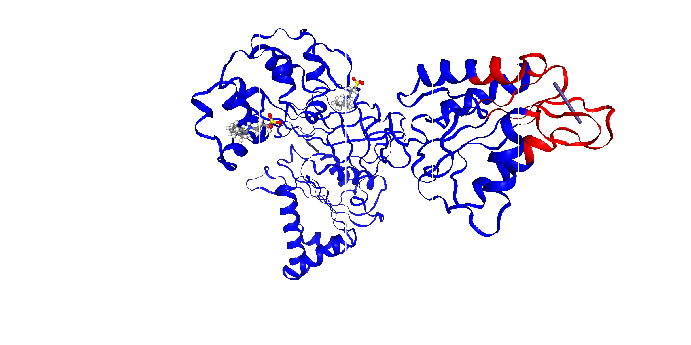

Sulfite Reducatase Flavoprotein Sulfite reductase flavoprotein (SiRFP) is a 64kDa monomer unit and can form a 540kDa octamer by oligomerization of its N-terminal first 52 amino acids SiRFP contains the FMN binding flavodoxin (Fld) domain, a FNR (Ferredoxin NADP+ reductase) like NADPH/FAD binding domain and a connection domain which interrupts the FNR domain. A 30 amino-acid long, flexible linker is present, joining the Fld and FAD domains. SiRFP is a homolog of cytochrome P450 reductase, having its N-terminal in the Fld domain and its C-terminal in the FNR domain.
FP60-HP: molecular weight-124kD
NFPSh:molecular weight- 22kDa (monomer), 176kDa (octamer)/n NFPSh has elution volume less than dimer so it is behaving as an octamer
We can find out binding residues with help of inbuilt functions in biopython Bio.PDB module or we can find out our own list of residues by setting cutoff, which means all the residues which are in 10 angstrom region will considered as binding residues. Below are the images showing binding residues from the set cutoff. (You can see zoom in and rotatory images from the output of the function and you can also see the respective amino acid by pointing the mouse on it)


